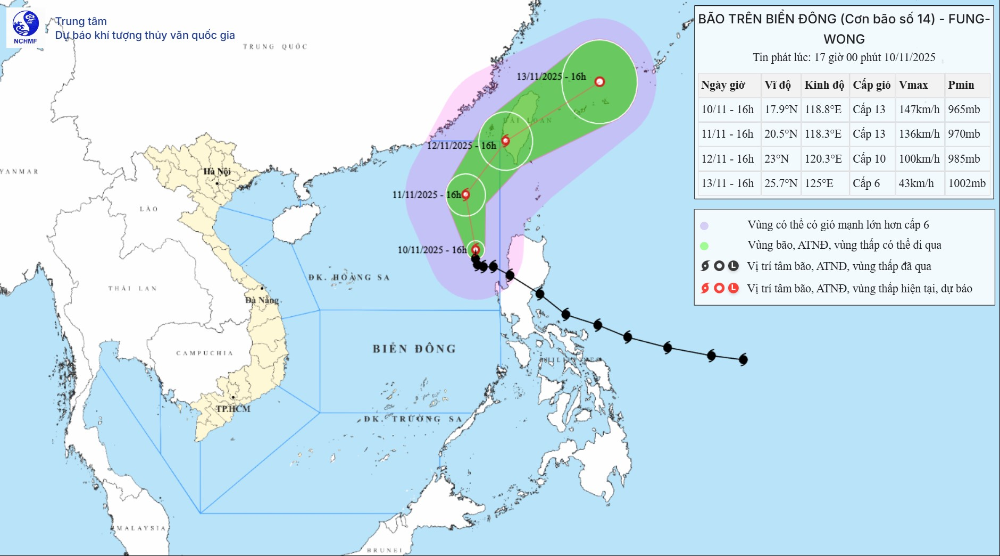

📍 Hiện trạng:
Hồi 16 giờ ngày 10/11, vị trí tâm bão ở vào khoảng 17,9 độ Vĩ Bắc; 118,8 độ Kinh Đông, trên vùng biển phía Đông khu vực Bắc Biển Đông. Sức gió mạnh nhất vùng gần tâm bão mạnh cấp 13 (134-149km/giờ), giật cấp 16. Di chuyển theo hướng Bắc Tây Bắc, tốc độ khoảng 10km/h.
📍 Dự báo diễn biến bão (trong 24 đến 72 giờ tới)
| Thời điểm dự báo | Hướng, tốc độ | Vị trí | Cường độ | Vùng nguy hiểm | Cấp độ rủi ro thiên tai (Khu vực chịu ảnh hưởng) |
|---|---|---|---|---|---|
| 16 giờ ngày 11/11 | Bắc Tây Bắc, 10-15 km/h | 20,5N-118,3E; trên vùng biển phía Đông khu vực Bắc Biển Đông | Cấp 13, giật cấp 16 | Vĩ tuyến 16,00N-21,50N; phía Đông kinh tuyến 116,00E | Cấp 3: vùng biển phía Đông khu vực Bắc Biển Đông |
| 16 giờ ngày 12/11 | Bắc Đông Bắc khoảng 15 km/h | 23,0N-120,3E; trên vùng bờ biển phía Tây Nam đảo Đài Loan (Trung Quốc) | Suy yếu dần. Cấp 10, giật cấp 13 | Phía Bắc vĩ tuyến 18,00N; phía Đông kinh tuyến 116,00E | Cấp 3: vùng biển phía Đông Bắc khu vực Bắc Biển Đông |
| 16 giờ ngày 13/11 | Đông Bắc, 20-25 km/h | 25,7N-125,0E; trên vùng biển phía Đông Bắc khu vực Đài Loan (Trung Quốc) | Tiếp tục suy yếu. Cấp 6, giật cấp 8 |
📍 Dự báo tác động của bão:
Trên biển:
Vùng biển phía Đông khu vực Bắc Biển Đông có gió mạnh cấp 8-10; vùng gần tâm bão đi qua mạnh cấp 11-13, giật cấp 16, sóng biển cao 5,0-8,0m, vùng gần tâm bão 8,0-10,0m. Biển động dữ dội.
Toàn bộ tàu thuyền hoạt động trong các vùng nguy hiểm nói trên đều có khả năng chịu tác động của dông, lốc, gió mạnh, sóng lớn.